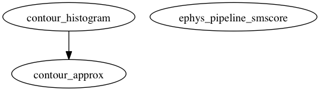

Master index
Index for ephys/helpers/spectral
Dependency Graph for ephys/helpers/spectral

Generated on Thu 19-Jul-2012 21:29:35 by
m2html
© 2005
 Master index
Master index Master index
Master index